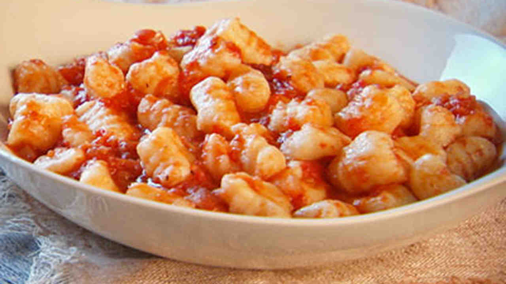
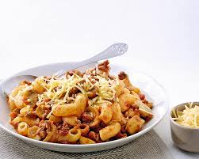
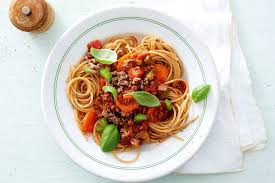

Blue
This page is Midnightblue.
Aqua
This page is Mediumaquamarine.



Olive
This page is Olive.
Orange
This page is Orangered.
Orchid
This page is Orchid.


This page is Midnightblue.
This page is Mediumaquamarine.
This page is Olive.
This page is Orangered.
This page is Orchid.